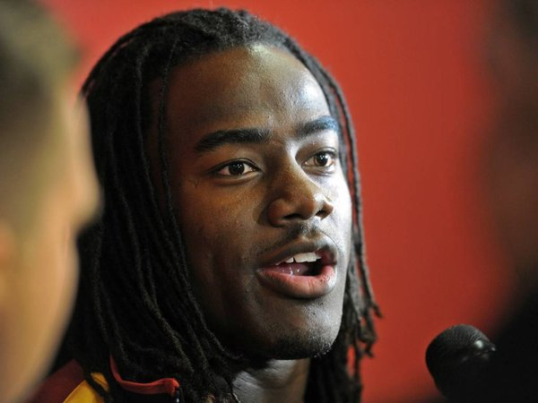

Clowns to the left, jokers to the right
n this Dec. 3, 2014 photo, University of Southern California cornerbackback Josh Shaw answers questions at a press conference of USC's new football coach Steve Sarkisian. Shaw confessed that he lied to school officials about how he sprained his ankles last weekend, retracting his story about jumping off a balcony to save his drowning nephew. The school swiftly suspended him from all football team activities Wednesday, Aug. 27, 2014, and acknowledged his heroic tale was "a complete fabrication." (Photo by Michael Owen Baker/L.A. Daily News) NO SALES; MAGAZINES OUT; HILLS OUT, LOS ANGELES TIMES OUT; VENTURA COUNTY STAR OUT; ANTELOPE VALLEY PRESS OUT THIS MAY HAVE been a disappointing year in Philadelphia sports, but mankind once again came through with plenty of missteps for our annual report on the year in fools.
While social media was again a big contributor, there are plenty of other examples of man having the proverbial chair pulled out from under him. From KKK outfits to the stadium design that resembled a toilet, we certainly fumbled our way through these last 365 days.
As always, we start with the easiest target in this annual exercise of tossing boulders from the living room of our glass house.
***
MORE COVERAGE
WATCH: Latest sports videos
BUY: Philly sports gear
DISCUSS: Join our sports forums
Daily News sports writer Ed Barkowitz wrote during last year's playoffs that Dave Poulin was the only Flyers captain to lead the team to multiple Stanley Cup finals appearances.
Yo.
The clause "since Bobby Clarke" was deleted at some point and the mistake found its way into the newspaper.
Anger and mortification quickly ensued, and the following correction was published on April 24: "The Daily News yesterday should have said that Dave Poulin was the last captain to lead the Flyers to multiple appearances in the Stanley Cup finals. Bobby Clarke, of course, led the team to three from 1974-76."
Yeah, heard he even won two of them.
Grrrrr.
***
Here's an example of why automation is dangerous. This tweet, which we've edited, made it onto the air during Canadian network TSN's coverage of the hockey trade deadline:
"I want the leafs to keep lupul solely based upon the fact that he phaneuf's wife."
TSN later said there was no basis for the allegation made in the tweet.
***
Knicks chairman James Dolan received a scathing email from fan Irving Bierman blasting the team for another hopeless season. His response:
"You are a sad person. Why would anybody write such a hateful letter. I am just guessing but ill bet your life is a mess and you are a hateful mess . . . You most likely have made your family miserable. Alcoholic maybe. I just celebrated my 21 year anniversary of sobriety. You should try it. Maybe it will help you become a person that folks would like to have around. In the mean while start rooting for the Nets because the Knicks dont want you."
"He accused my husband of things he is guilty of," Joan Bierman told the Myrtle Beach Sun-News, where the couple lives. "I'm married to this man for 48 years. He's one of the nicest, kindest people. He's very outspoken, but that's OK. He's not phony. He speaks his mind."
***
Yo, Pete. Just give the ball to Marshawn Lynch.
***
Texas A&M student assistant coach Mike Richardson twice shoved West Virginia players during the Liberty Bowl, the second time smacking a kid violently on the back of the helmet.
A&M won the game. Richardson lost his job.
***
Cassie Baalke, a passionate 49ers fan who is well-connected, vented this about San Fran's offensive coordinator following a 19-3 loss.
"Greg Roman can take a hike. The 49ers don't want you no more."
Though her father, 49ers GM Trent Baalke, quickly apologized, she was kinda right. Roman was let go by the Niners after the season.
***
Dallas tried to generate traffic for its game in London with the Jacksonville Jaguars with the tag #CowboysUK. Problem was, opposing fans saw it as #CowboySUK.
***
A preliminary drawing of the design of the new arena for the Golden State Warriors looked spot-on like a toilet bowl, which had the team playing major damage control.
"This was clearly a reminder of the speed and fury of the Internet," spokesman P.J. Johnston told ESPN.com. "This story spread like wildfire and became part of the news cycle. In the end, we will build a great home for the Warriors in an incredible location and we will meet the expectations of our fans."
***
Giants pitcher Matt Cain landed on the disabled list when he tried to catch a knife he had dropped while making a ham-and-cheese sandwich. The mishap caused a cut on his pitching hand.
"I wanted to make it fancy in triangles," he said.
***
Those contrived news conferences where kids breathlessly declare their college intention went awry for one recruit.
Carlton Bragg, a forward out of Cleveland, put on a Kansas Jayhawks hat and announced his intention to attend "the University of Kentucky." Obviously, the kid was nervous and just misspoke. Still, it was the only thing Kentucky has lost all year.